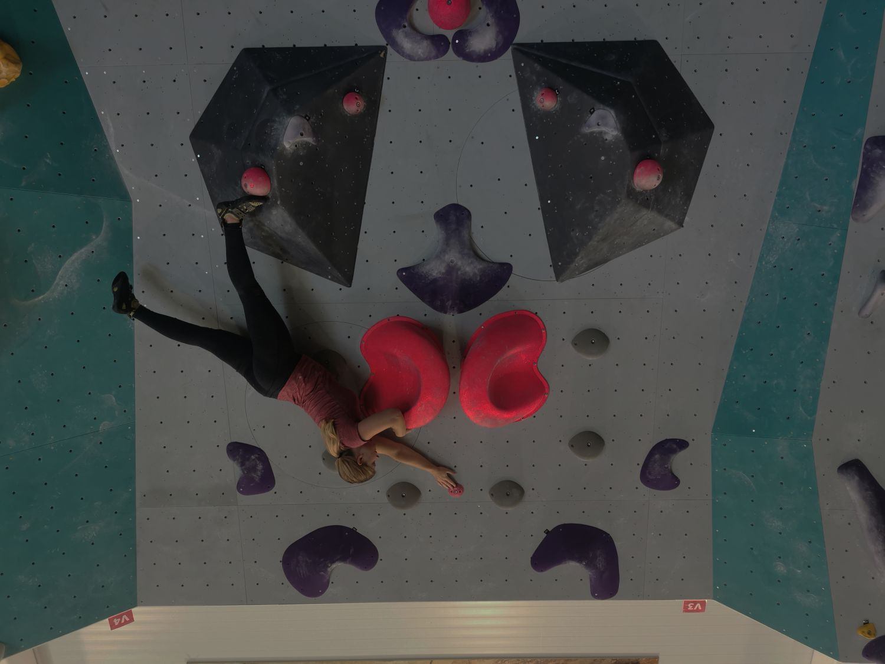

Bild 1

Bild 1 är roterad och beskuren. Kontrast, ljusstyrka, och färgbalans är justerad och färgen är ändrad på alla rosa klättergrepp.


Bild 1 är roterad och beskuren. Kontrast, ljusstyrka, och färgbalans är justerad och färgen är ändrad på alla rosa klättergrepp.
Bild 2 är beskuren. Färgbalans, kontrast, ljusstyrka, nyans och mättnad är justerad. Flygplanet är borttaget.
Bild 3 är roterad och beskuren. Kontrast, ljusstyrka, färgbalans och mättnad är justerad. Ljusa strecket är borttaget.